2008 · Principale · Nation
Nation · Flight 002
Spain
Opere 21


La serata 24 foto

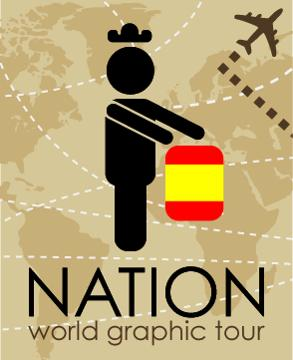

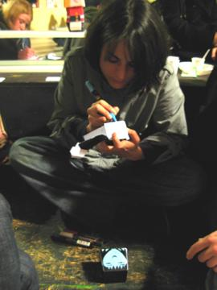

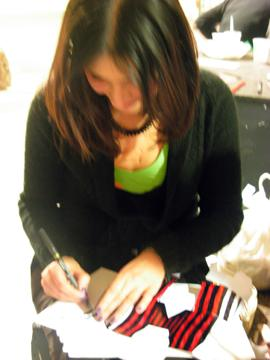

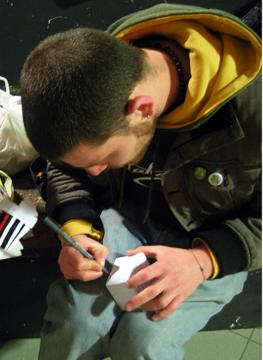

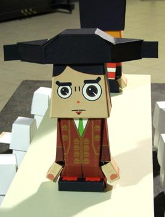

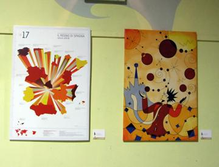

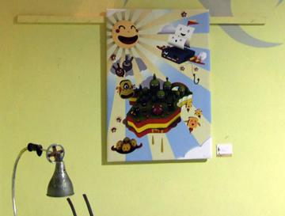

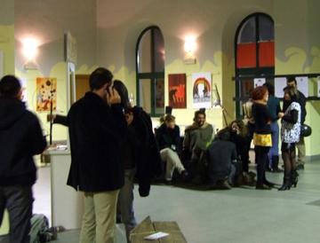

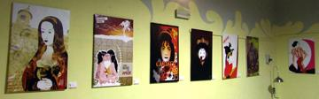

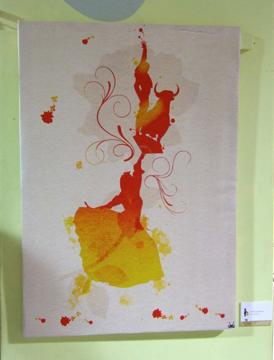

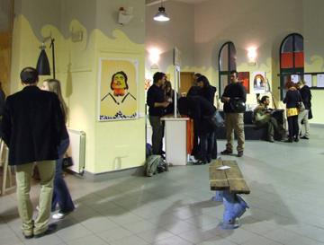

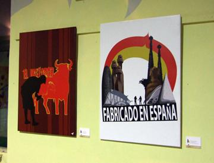

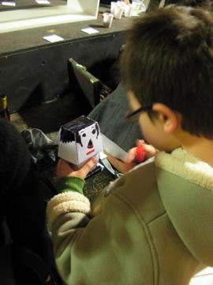

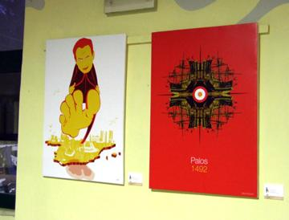

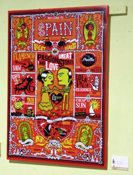

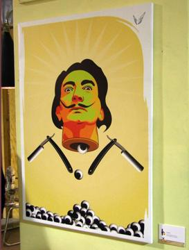

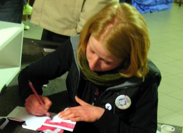

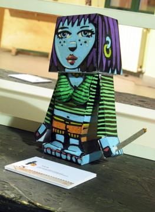

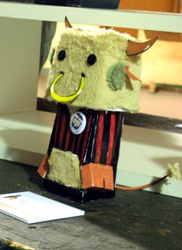

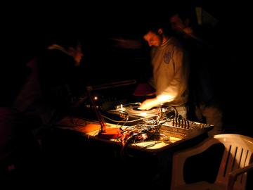

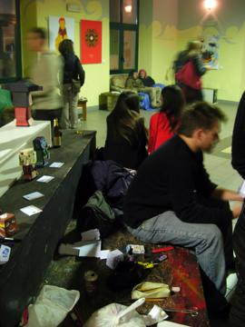

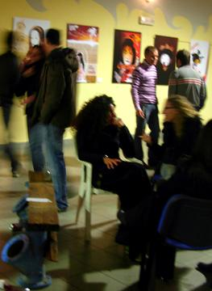

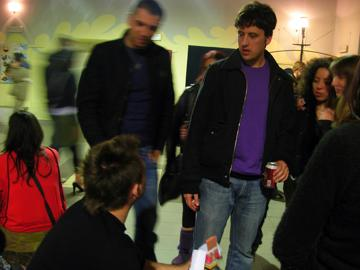

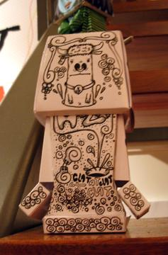
Artisti 20
Andi RivasArtevettorialeCescCiba Chrome*Fabio ArmidaGabriele CecereGinevra Virgili · gin°Guido VitabileLady FlowersLiza Marie CalestiniMatteo GuazzoneMiriam Tognella · Disorder DesignnaZzillaRoberta Rizzi · RoRiSara Di MarioSparlaSpumoneStefano Longo · thisisstupiduLaValentina Tata
GRA — Genuine Roman Art · RomaOpere © i rispettivi autori